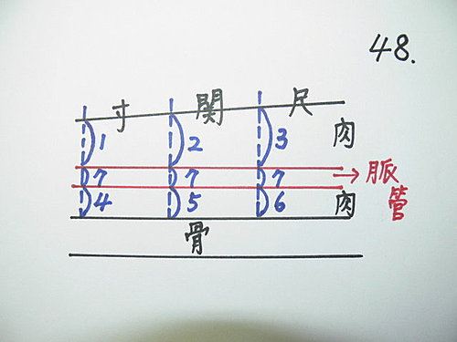
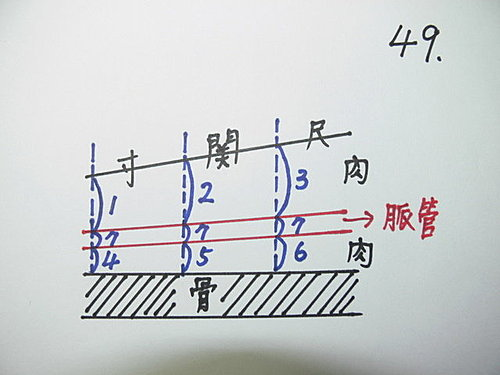
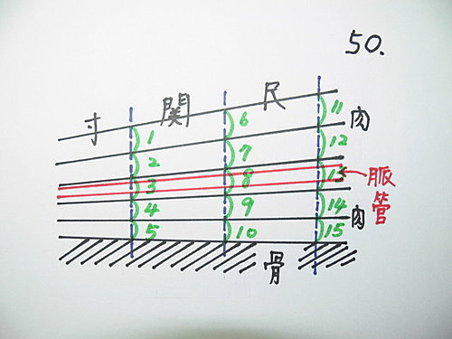

脈理醫理學 16.2：按脈時三指同下乃一大謬誤（三）－－單按法或總按法時，尺脈脈管較沉的問題
作者：陳建元
有細心體會脈診經驗的人，會發現尺脈的脈管在生理上比寸關沉些，所以不管是總按法或單按法，有一個說法，就是單按或總按時，尺脈的下指定位應該比寸關沉些，理由如〈圖48〉，這個說法是因為發現生理上的距離3＞2＞1，這是正確的，但這個說法的同時，是同時把距離當6＝5＝4來看待的，或是忘了把4、5、6這些距離考慮進去了，當成脈管下是直接黏著骨頭來看待的。

但事實上，由現代人體的斷面圖來看，發現脈管並不是這麼走的，〈圖49〉才是正確的脈管橫面圖，不但距離3＞2＞1，而且距離6＞5＞4。脈管並不是黏著骨頭而行走，脈管的上下方墊著肌肉和脂肪。而實際用手指單按操作按按看，也會發現6＝5＝4並不正確，而是6＞5＞4才正確，這同時也符合解剖學上所見到的情況。


所以，〈圖49〉不管是單按或總按，寸應該是1＋4＋7均分成五層，關應該是2＋5＋7均分成五層，尺應該是3＋6＋7均分成五層，這才是最標準的定位。
故實際使用時，應如〈圖50〉均分成五層，1＝2＝3＝4＝5的距離，6＝7＝8＝9＝10的距離，11＝12＝13＝14＝15的距離，如此來使用才是正確的。
【引用請先來信告知徵求同意，若有涉及販售營利等商業行為，版權所有拷貝盜用必究。】
【藥王脈學講壇】http://blog.xuite.net/drjychen/twblog